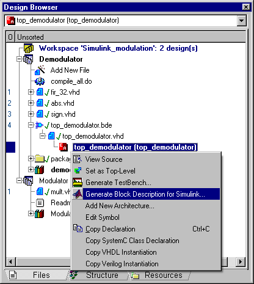
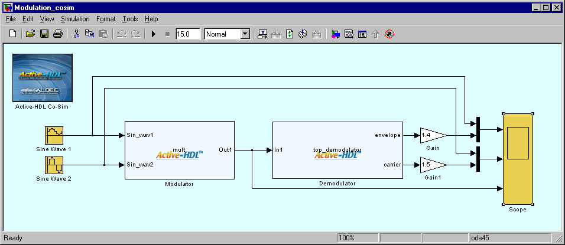
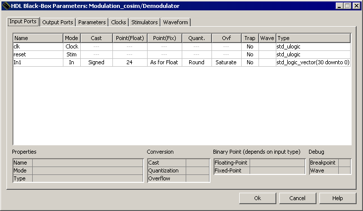
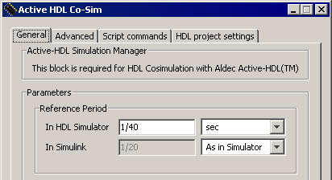
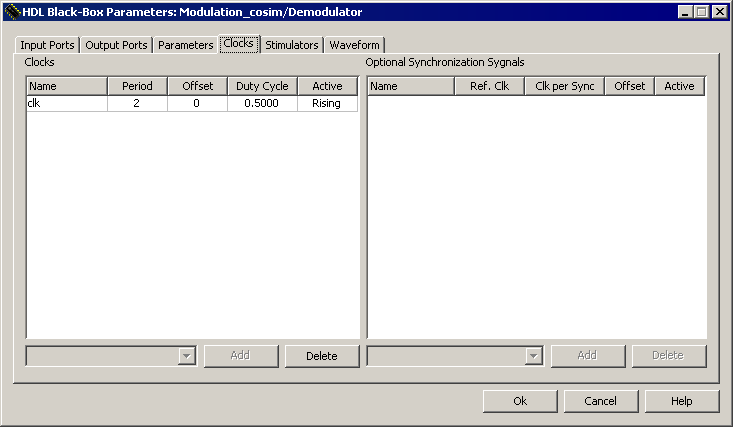

SIMULINK_MODULATION is simple DSP design using several components written in VHDL to demonstrate the use of Active-HDL Co-Simulation Interface to Simulink®.
MATLAB® and Simulink® software can be downloaded from the MathWorks website at www.mathworks.com.
The top-level diagram is created using Simulink diagram editor. This diagram instantiates HDL Black-Boxes of modulator and demodulator, both described in VHDL.
The workspace SIMULINK_MODULATION contains a description of components used in Simulink block diagram. It includes:
Simulink design is simple example of amplitude modulation/demodulation channel. Two sinusoidal signals, carrier and information, are multiplied using modulator HDL Black-Box. The amplitude modulated signal can be observed on its output.
This signal is applied to demodulator built using following functional blocks:
To start co-simulation of this design in Simulink, we need to use Active-HDL to create files that describe our HDL components in Simulink diagram.
Compile the Demodulator design using compile_all.do macro and the Modulator design using compile.do macro. These macros include also simulinkgenmod macro command which generate block description files for Simulink.
Alternatively, compile design files manually and select top-level modules (top_demodulator in the Demodulator design and mult in the Modulator design). For each of the selected top-level modules (Figure 1), use the Generate Block Description for Simulink option from the pop-up menu. Confirm the default file names and locations by pressing OK in the Save As dialog box.

Figure 1. Generating the block description file for co-simulation in Simulink
Once the block description files are created for all modules mentioned above, invoke MATLAB. If you use the co-simulation interface for the first time, browse to the $ALDEC/Simulink folder and type the setup command. (The $ALDEC variable points to the Active-HDL installation folder; you can examine its value using the set command in
Open the $WSP/Simulink/modulation_cosim.mdl file in the Simulink environment. Make sure that the $WSP/Simulink folder is either set as the current folder or added to the MATLAB search path.
The model contains the Active-HDL Co-Sim block on the top-level diagram and two HDL Black-Boxes corresponding to instances of the top_demodulator and the mult entities (Figure 2). The name displayed in the middle of the HDL Black-Box symbol corresponds to the configuration filename. By default, it is the name of the entity/module, unless you change it with the Generate Block Description for Simulink option. The HDL Black-Boxes are distinguished graphically with the Active-HDL logo.

Figure 2. The Simulink model window
Now, you can simply start simulation and observe the results on the Simulink scopes. For additional information on how to setup co-simulation, refer to the chapters below.
Double-click on one of the HDL Black-Boxes. The HDL Black-Box Parameters dialog box (Figure 3.) allows you to control data transfer conditions and check properties of every port. Some of main properties are listed below.
Please refer to the on-line documentation for detailed information on remaining dialog box options.

Figure 3. HDL Black-Box Parameters dialog box (Input Ports tab)
Most of HDL simulators, including Active-HDL, use an event-driven simulation methodology, while Simulink performs cycle-based simulation. This implies a major consequence: data can be exchanged between the two domains only at scheduled time steps. It means that none of HDL Black-Boxes can be evaluated and no data transfer occurs between time points resulting from the specified sampling period. The fixed-step discrete solver also needs to be used in Simulink to provide correct co-simulation results.
The sampling period and the relationship between Active-HDL and Simulink time domains is defined in the

Figure 4: Reference Period Settings
The Reference Period section defines base sampling rate for all HDL Black-Boxes. The HDL Black-Box Parameters dialog box allows setting the following timing parameters of an individual HDL Black-Box:
All parameters specifying the time are defined as integers related to the Reference Period. The minimal clock period is 2, so the reference period has to be shortened twice with reference to the period of the fastest clock, assuming the duty cycle of 0.5.
NOTE: Be aware of the round-off error when specifying a period by using frequency units. The fractional part of the resulting period will be rounded to three digits.
Figure 5. shows the clock settings in the HDL Black-Box Parameters of the Demodulator block:

Figure 5. Clocks settings for the Demodulator block
For further information on Active-HDL Co-Simulation Interface to Simulink, refer to Active-HDL Online Documentation.
The FIR implementation is a modification of an opencore downloaded from www.doulos.com. Refer to this site for copyright notices.